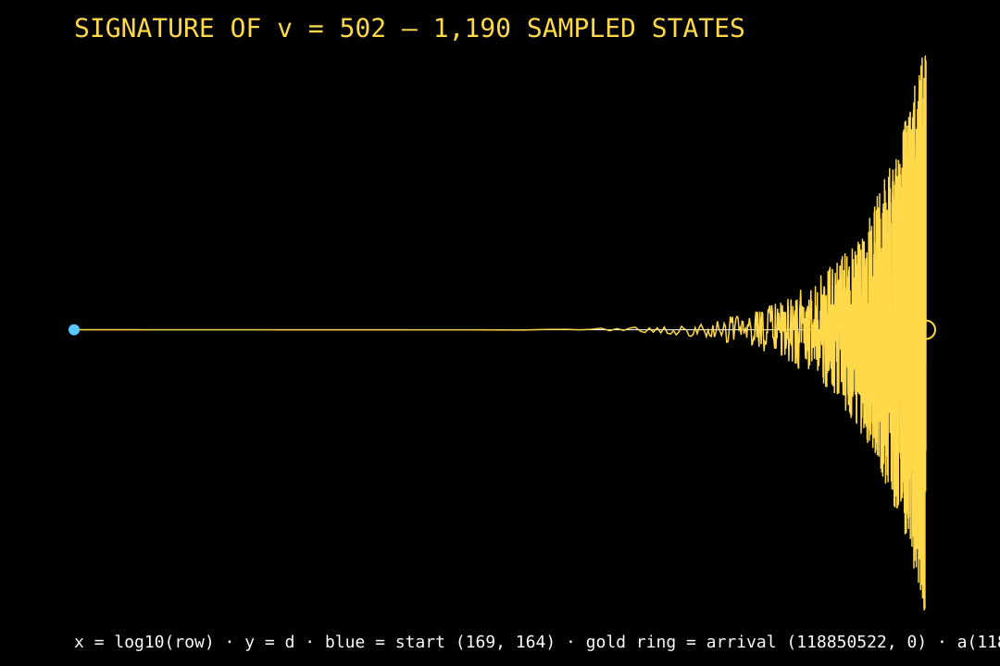

One math, twelve uses. Each perspective built fully, one at a time. Surjectivity is OPEN. The $300 prize is unclaimed. Nothing here claims otherwise.
ADMIT / REFUSE / UNKNOWN. The decision procedure as a gate.
591/591 ADMIT exact, 0 mismatches; 0 REFUSEs in 29,991 real targets.
Premise refuted by measurement: forward cost = reverse cost + 1, exactly.
Batch 591: 205,350,528 forward vs 205,349,937 reverse — difference exactly 591.
Codebook = row triples. Decode or detect, never falsely decode.
Roundtrip 591/591 and n = 1..1000: 0 failures, 0 errors, 0 erasures.
Premise corrected: never-loops is proved; never-stuck is not.
Three fates: HALTS / STUCK (certified no) / RUNS ON. Assert-run on v = 502: 118,850,353 steps, 0 invariant failures.
Mirror variables halve every step; switches cost (4/3)i + 29/9.
198,909 steps, 98,712 switches, 0 violations; targets split exactly −12 / −10 / −8 thirds.
Efficiency corrected: the mechanism bisects, the cost is linear O(n).
Mean 4,941,608.2 steps, median 12,049 — a long tail, not a logarithm.
The branch sequence is a fair coin, statistically — deterministic, not random.
102,688,349 runs, geometric fit to ~0.5%; even share 0.5000 over 205M flips.
32 bars of 3/4: drums = branches (exact), melody = d-samples (projection).
96 drum strokes matching coin.c exactly; MIDI playable (delivered as a file).
Disjoint paths, no junctions: no merges, no forks, no cycles.
773,977 nodes, 773,780 edges, 0 violations; nodes − edges = 197 lanes.
Identity = (row, position, witness). Row + position are free; the witness costs the walk.
29,991 identities distinct, 29,965 witnesses distinct, 0 collisions each.
Price = steps actually walked. Most certificates are cheap; a few are enormous.
Median 12,049 steps; 46.7% of all steps spent certified nothing (26 UNKNOWNs).
The trajectory itself, as a drawing — a fingerprint no other value can produce.
Fingerprint SHA-256: 5353f24254d099eaecbdfcff59271da49b313de4fa745e2ed16eb0e374faf254. Invertible both ways; 0 shared states vs v = 503 and v = 504.

Videos: the frontier (full map) and the math (actual math) live under ../videos/, each with SPEC + BINDING sidecars. The twelve specs live here. Surjectivity remains OPEN.